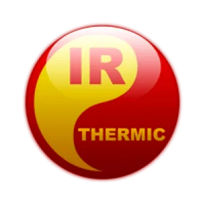
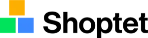
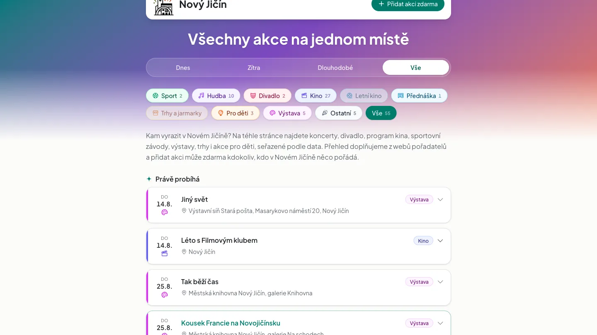
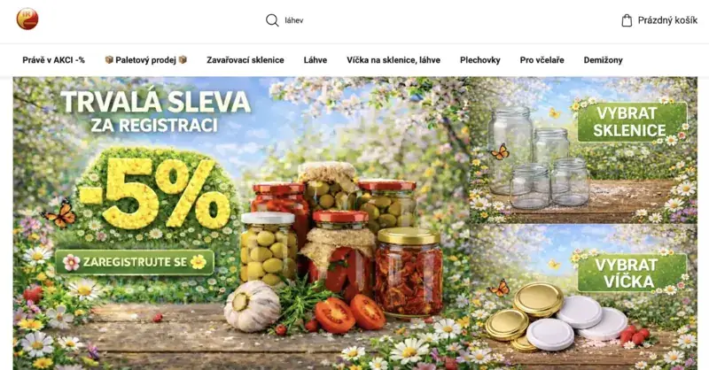
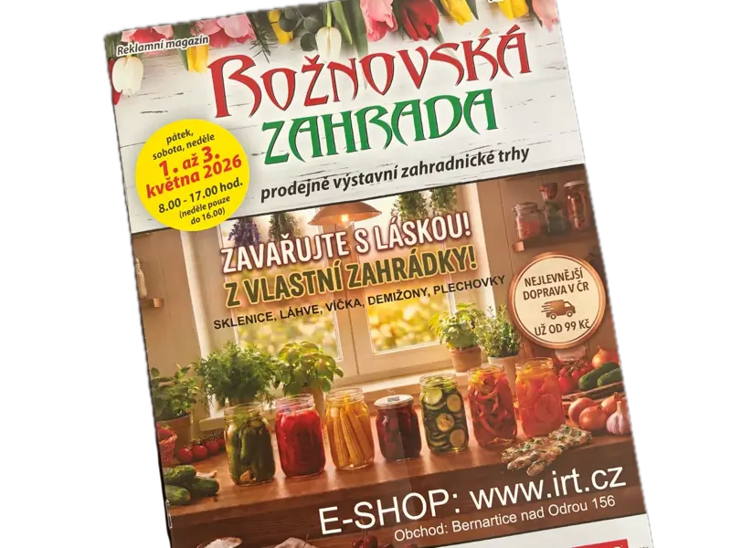

Tvorba webů a Shoptet e-shopů bez prostředníků.
Ahoj 👋
Jmenuji se Martin, tvořím weby a e-shopy v Novém Jičíně a pomáhám firmám růst online. Projekty vedu sám, takže máte jistotu rychlé domluvy, osobního přístupu a výsledků, které dávají smysl.


Proč já?
Jeden člověk, který tomu rozumí z obou stran. Z obchodní i z technické.
Co všechno u mě dostanete pod jednou střechou
Web, e-shop, fotky i grafika od jednoho člověka. Nemusíte to slepovat ze tří dodavatelů.
- Shoptet e-shop
- Webové stránky
- Webové aplikace
- Kodérské úpravy šablon
- Grafika a tisk
- Produktové fotografie
- SEO
- Bannery
- Správa webu
- Hosting
- Konzultace růstu
Jak to probíhá
Ať víte, do čeho jdete, ještě než mi zavoláte.
-
Nezávazný hovor
15 minutŘekneme si, co potřebujete, jaké jsou vaše cíle a potřeby.
-
Nabídka
do 3 dnůKonkrétní cena a termín. Žádné „od do“ a doúčtování.
-
Návrh
Ukážu vám, jak to bude vypadat, ještě než se začne kódovat.
-
Stavba a průběžné ukázky
Vidíte to růst, ne až hotový výsledek.
-
Spuštění
Předám přístupy, ukážu hotovou práci a vše vysvětlím.
-
Po spuštění
Nezmizím. Když budete cokoliv potřebovat nebo konzultovat, jsem tu pro vás. Veškeré úpravy po odevzdání se pak odvíjí od hodinové sazby.
Reference
Co o mně říkají zákazníci.
„Spolupráci s tvůrcem mých webových stránek, panem Akulšinem, hodnotím velmi pozitivně. Oceňuji především profesionální přístup, rychlou komunikaci a schopnost pochopit moje představy i potřeby v oboru realit. Web působí moderně, přehledně a zároveň je praktický pro klienty. Určitě doporučuji!“
„Spolupráce s panem Akulšinem předčila má očekávání. Jeho vstřícný a osobní přístup, spojený s precizní prací a flexibilitou, mi opravdu vyhovoval. Díky jeho širokým dovednostem v oblasti e-shopů, fotografie a grafiky jsem dostal přesně to, co jsem hledal. Doporučuji!“
„S panem Akulšinem jsme velmi spokojení. Profesionální přístup, spolehlivost, rychlé jednání. Oceňujeme také kreativitu, smysl pro detail a preciznost odvedené práce. Velmi příjemná spolupráce a ochota.“
„Čím více se lidé o akcích dozví, tím lépe pro pořadatele i samotné návštěvníky.“
Vybrané projekty
Ukázka posledních prací.

akcenj.cz, všechny akce v Novém Jičíně na jednom místě
Nikdo si ho neobjednal. Postavil jsem ho, protože mě štvalo, že se o akcích dozvím až druhý den z Facebooku.
Za první týden tam bylo 46 akcí a napsal o tom Novojičínský deník.
Zobrazit case study
Ing. Eva Matláková - Reality
Osobní web realitní makléřky REMAX Relations. Důraz na osobní značku, nabídku nemovitostí a rychlý kontakt.
Navštívit web
Ing. Pavla Frant - Reality
Osobní web realitní makléřky s přehlednou prezentací služeb a referencemi spokojených klientů.
Navštívit web
IRT.cz - Zavařovací potřeby
E-shop se zavařovacími potřebami. Přehledný katalog, rychlé objednání a optimalizace pro vyšší konverzi.
Navštívit web
Autoškola Sport
E-shop autoškoly s přehledem kurzů, cen a jednoduchým online přihlášením pro budoucí řidiče.
Navštívit web
Česko Zavařuje
Full-stack webová aplikace pro komunitu zavařování. Vlastní design, registrace receptů a sdílení tipů.
Zobrazit case study
Rožnovská zahrada - tištěný banner
Reklamní banner pro e-shop IRT.cz, umístěný na úvodní straně magazínu Rožnovská zahrada (jarní zahradnické trhy 2026).
Navštívit klientaCeník webů
Transparentní ceny. Bez skrytých nákladů.
Webové stránky
Web na míru, od návrhu po spuštění.
- Neomezený počet stránek
- Správa obsahu (s administrací nebo bez)
- Responzivní design (optimalizováno pro mobily, tablety i PC)
- Webová grafika (na míru dle domluvy)
- Základní SEO (optimalizace pro vyhledávače a AI)
- Audit a propojení profilů (Google a Seznam)
- Legislativní balíček (GDPR a správa cookies)
Shoptet e-shop
Kompletní spuštění e-shopu na platformě Shoptet jako Bronzový partner.
- Kompletní nastavení Shoptet šablony
- Úprava vzhledu na míru, napojení doplňků
- Nastavení procesů, plateb a dopravy
- Cena se odvíjí od rozsahu a designu
Hodinová sazba pro další úpravy je 1 200 Kč. Nejsem plátce DPH.
Ceny jsou orientační, po krátkém hovoru pošlu konkrétní nabídku na váš projekt.
Časté otázky
To, na co se lidi ptají nejčastěji. Krátce a bez vytáček.
Komu patří doména, web a data?
Vám. Doménu registruju na vaše jméno, web i data jsou vaše. Kdykoliv si je můžete odvézt jinam.
Co když se rozejdeme, zůstane mi web?
Ano. Předám vám přístupy i zdrojové soubory. Nic si nedržím jako rukojmí.
Musím dodávat texty a fotky sám?
Nemusíte. Texty umím napsat a produkty nafotit. Když je ale máte, ušetříme čas i peníze.
Co když nemám logo?
Navrhnu ho. Dělám i grafiku, takže logo, vizitky nebo bannery zvládnu ve stejném stylu jako web.
Jak dlouho stavba webu nebo e-shopu trvá?
Webové stránky zhruba dva týdny, e-shop zhruba měsíc. Záleží na rozsahu práce. Konkrétní termín dostanete v nabídce a ten platí.
Můžu si obsah měnit sám?
Při předání vše vysvětlím. Pokud máte v balíčku administraci, ukážu vám, jak si obsah měnit sami. Pokud ne, veškeré úpravy dělám za vás a vy se soustředíte na své podnikání.
Děláte i weby mimo Nový Jičín?
Dělám. Většina domluvy stejně proběhne přes Meet. Na kávu se potkáme v Novém Jičíně a okolí, jinam dojedu po dohodě.
Proč Shoptet a ne vlastní řešení?
Shoptet dává smysl, když chcete prodávat a neřešit techniku. Platby, doprava i napojení na účetnictví jsou hotové a někdo je udržuje. Vlastní řešení stavím tam, kde Shoptet nestačí.
Roky jsem v IT prodával. Pak jsem si sedl na druhou stranu stolu.
Jezdil jsem jako obchodní zástupce na schůzky do firem jako ABB, Tescoma, Rudolf Jelínek nebo Marlenka. Prodával jsem správu sítí, software, hardware i školení zaměstnanců.
Weby jsem jim nedělal, ale naučil jsem se tam něco, co většina kodérů nezná. Vím, jak firma uvnitř funguje, kdo o čem rozhoduje a proč jedna nabídka projde a druhá skončí v šuplíku.
A hlavně: sebelepší produkt je k ničemu, když zákazník do třiceti vteřin nepochopí, co z toho má.
Pak jsem začal weby stavět sám. Dodnes u toho přemýšlím jako obchodník. Neřeším, jestli je tlačítko dost hezké, ale jestli na něj někdo klikne.
Nejlíp je to vidět na akcenj.cz. Nikdo si ho neobjednal. Prostě mě štvalo, že se o koncertech v Novém Jičíně dozvím až z fotek na Facebooku. Tak jsem to postavil. Za první týden tam bylo 46 akcí a napsal o tom Novojičínský deník.
U vašeho webu mě bude zajímat to samé. Co konkrétně má vyřešit a jak poznáme, že to funguje.
Těším se na spolupráci.